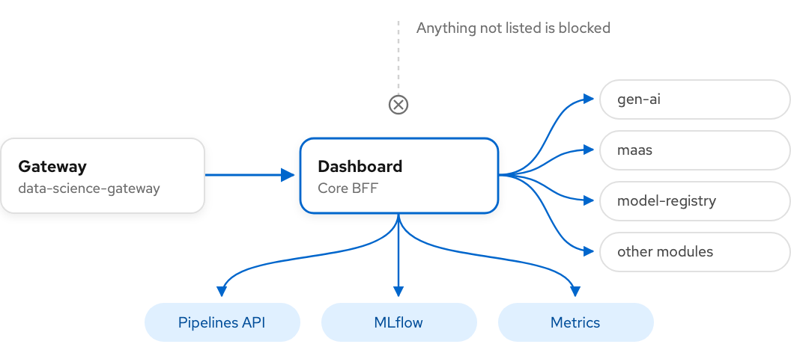
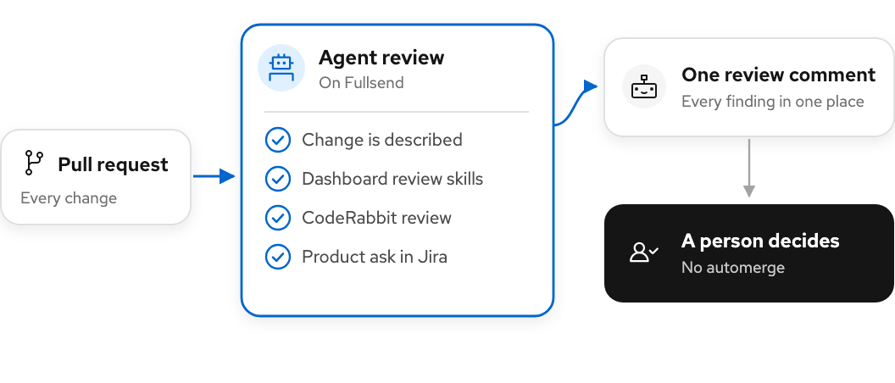
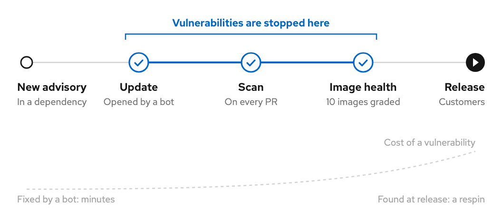
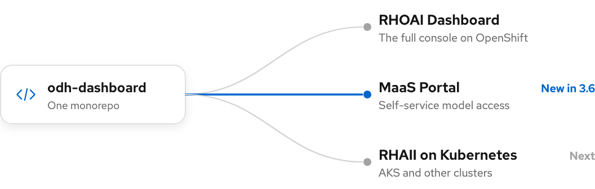

|
Red Hat OpenShift AI Dashboard Platform |
RHOAI 3.6 |
|
| |
RHOAI 3.6 · Dashboard Platform Ready for production. Built to stay that way.In 3.6 the Dashboard Platform worked on both sides of the product. What customers run became dependable: a portal for model consumers, an operator that proves every change and a dashboard ready for OpenShift 5. How every dashboard team builds it changed too: an agent reviews each pull request, and vulnerabilities stop before they merge. |
| |
 |
| |
|
148
changes shipped in 3.6
|
149
engineering-system improvements
|
18
epics delivered
|
4
critical CVEs fixed before EA2
|
|
| |
Why it matters Built for the business, not just the backlog.Most of 3.6 is invisible in a demo. It shows up as a new way to sell models, fewer escalations after upgrades, and fixes that reach customers before a release, not after. |
| |
|
A new way to sell models
People who only consume models no longer need an OpenShift account. That opens Models-as-a-Service to every developer in a customer's organization.
|
Fewer escalations
Operator changes are tested on a real cluster before they merge. Upgrade surprises are caught by us, not by customers.
|
Safer code, sooner
An agent gives every pull request its first review, and vulnerable dependencies are fixed when they appear, not during release preparation.
|
|
| |
What's new Shipped in 3.6. |
| |
|
New in 3.6
MaaS Portal. A front door for models.
Developers who call models, but never run clusters, now have a place of their own. They see the endpoints they have been granted, create API keys and follow their usage, without an OpenShift account. The portal ships as its own distribution, built from the same code as the RHOAI dashboard.
RHAISTRAT-1545 · RHOAIENG-88481

|
Ready for OpenShift 5.
OpenShift 5 closes networking by default, asks every component to follow the cluster's TLS profile and installs operators through OLM v1. The dashboard now ships its own least-privilege network policy for every component, reads the cluster TLS profile with a TLS scanner in CI, and recognises both install models, so customers can move to OpenShift 5 without waiting on us.
RHOAIENG-93714 · RHOAIENG-75339 · RHOAIENG-95173

|
|
Model serving, as a module.
Model serving now loads as an independent module with no dependencies on dashboard internals. It is the pattern every remaining feature will follow.
RHOAIENG-79873
| |
Lighter on large clusters.
The operator now caches only what it manages, so its memory stays flat as clusters grow, including through upgrades.
RHOAIENG-98541
|
|
| |
Quality Built not to break.The Dashboard operator installs and upgrades every module on every cluster. A regression there is not a bug, it is an outage. So in 3.6 every operator change has to pass three layers of tests before it can merge. |
| |
Problems caught in a pull request, not in a release.
Fast integration tests check each reconcile path, conformance tests check the operator against the platform contract, and then the change is installed on a real cluster. Issues that used to surface as release blockers now stop at review.
RHOAIENG-83682

|

Every release signed off.
Test plans, test matrices on real clusters, and product and documentation sign-off for the dashboard at EA1 and EA2.
RHOAIENG-83062 · RHOAIENG-92375
| |
Before EA2
4 critical CVEs, fixed.
A sweep across the whole repository found critical advisories in four backend images. All four were fixed before the second early-access release.
RHOAIENG-94985 · RHOAIENG-81265
|
|
| |
How we build A faster, safer way to ship.Every dashboard team merges into one repository, and the platform owns the engineering system behind it. In 3.6 it changed how code is reviewed, how vulnerabilities are caught and where tests run. None of it ships in a product image; all of it shows up in how fast and how safely the product does. |
| |
An agent reviews every pull request.
Since October every pull request to the dashboard gets a first review on Fullsend, the shared agentic review host. It checks that the change is described, runs the dashboard's own review skills and CodeRabbit, confirms the work has a product ask in Jira, and leaves everything in a single comment. A person always makes the final call: there is no automerge. Senior reviewers spend their time on judgment, not on routine checks.
RHOAIENG-98886 · RHOAIENG-82121

|
Vulnerabilities stop at the pull request.
Go code now gets the same protection as JavaScript: automatic dependency updates and a vulnerability check on every pull request, for the Go backends and the operator. The health grades of ten dashboard images were fixed too. A vulnerable library is replaced the day a fix exists, not during release preparation.
RHOAIENG-80315 · RHOAIENG-80316 · RHOAIENG-95685

|

CI kept running through a shutdown.
Test clusters, CI runners and shared development clusters moved off the retiring PSI OpenStack before its 30 September shutdown.
RHOAIENG-90620
| |
A lighter build.
The repository's workspace, CI and 28 container builds moved to pnpm, and CI now runs only the tests a change affects.
RHOAIENG-83227 · RHOAIENG-97761
|
|
| |
What we enabled More products, one platform.A platform team succeeds when others ship on top of it. In 3.6 a new product came from the same code, and every team got the review and security tooling for free. |
| |
One codebase, more products.
The same code ships as the full RHOAI dashboard and, new in 3.6, as the MaaS Portal. Next, it becomes the model deployment experience for Kubernetes beyond OpenShift.
RHOAIENG-90189

|

Onboarding by convention.
A new module now gets most of its operator settings by convention, and each team owns its own manifests. Data Connect Hub joined this way.
RHOAIENG-81871 · RHOAIENG-90399
| |
A backend that travels.
The Go Core BFF routes every module API and carries the user's identity through. It is the groundwork for the dashboard beyond OpenShift.
RHOAIENG-85775
|
|
| |
Coming in 3.7 What we are working on next. |
| |
|
RHOAI beyond OpenShift
The model deployment experience and the MaaS interface on AKS and other Kubernetes distributions.
| |
An operator ready for the enterprise
Least-privilege access, real operational metrics, exact status reporting and high availability.
| |
Community plugins
Partners adding their own pages to the RHOAI dashboard without forking it.
| |
Breaking API changes caught in CI
Contract checks between the dashboard and its backends, and end-to-end results every team can see.
|
|
| |
|
| |